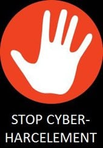
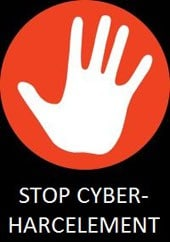
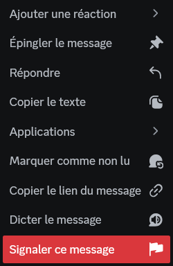

Le harcèlement est défini par les termes suivants: "Le harcèlement est le fait de tenir des propos ou d'avoir des comportements répétés ayant pour but ou effet une dégradation des conditions de vie de la victime. Cela se traduit par une dégradation de la santé physique ou mentale de la personne harcelée".
L'harcèlement vient sous de nombreuses formes. Le harcèlement moral, le harcèlement scolaire ou professionnel, sexuel, etc... ainsi que le Cyber Harcèlement. Tout type de harcèlement est sévèrement puni par la loi. Jusqu'à 15 000€ à 45 000€ d'amende et 1 an à 3 ans d'emprisonnement. Les harceleurs peuvent être une variété de personnes, qui ont comme point commun de participer à un harcèlement.
Le code pénal sur le sujet est téléchargeable au bas de la page.
Le cyberharcèlement est accentué sur les réseau sociaux grâce à plusieurs facteurs :
Le cyberharcèlement est une forme de harcèlement dont la particularité est d'avoir lieu sur internet, et plus particulièrement sur les réseaux sociaux. Naturellement, le cyberharcèlement est plus présent sur certains réseaux que d'autres, et c'est un vrai fléau que beaucoup de réseau ont du mal à gérer malgré les installations.
Cela dit, pour le cas de discord, il existe des manières de limiter le cyberharcèlement comme sur la plupart des réseaux.
De ce fait, il est interdit de prendre une photo d'un camarade et de la poster sans son accord, et également de faire des propos diffamatoires. Mais dans le cas contraire, si le consentement est respecté, le droit est accordé.
Sur Discord, le réseau nous offre la possibilité de bloquer certains utilisateurs, ce qui permet de ne plus envoyer ni recevoir des messages de cette personne. Il existe également un système de signalement. Tous les messages envoyés peuvent être signalés, si quelqu'un repère un message haineux, intimidant ou autre, il peut le signaler.
Discord a même fait une page intenet à ce sujet
En conclusion, le harcèlement, et plus particulièrement le cyberharcèlement est une menace réelle, mais il existe des moyens pour se sortir de situations délicates via les fonctionnalités du réseau, notamment Discord.